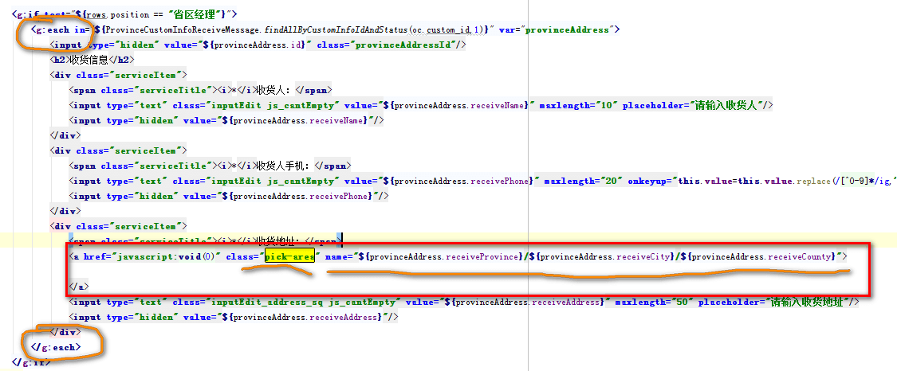
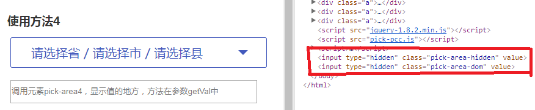
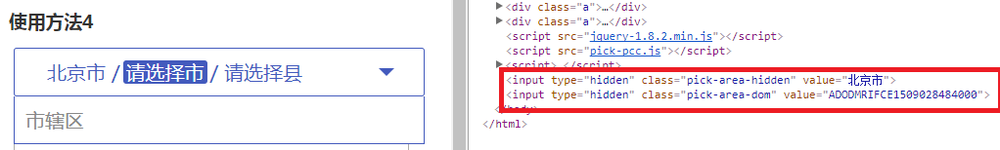
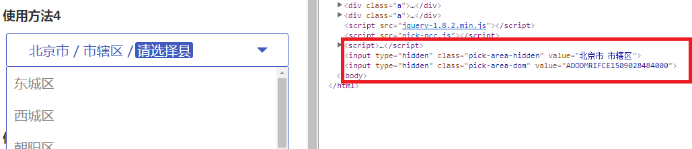
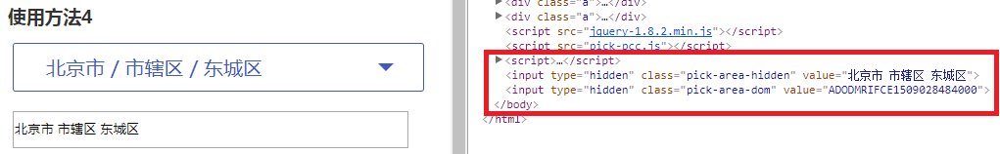
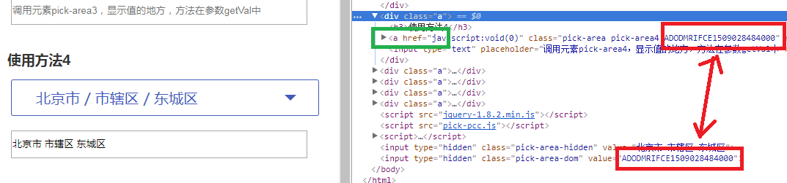
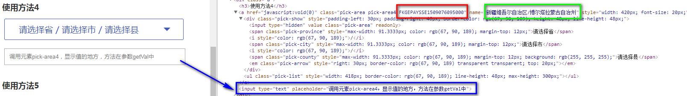

功能概要：
（1）数据初始化：提供两种数据初始化的方式
（2）样式友好化：样式可修改
（3）事件回调
（4）数据支持三种格式：“省/市/县”、“省/市”、“省
（5）很新的省市县json数据
1.两种省市县数据初始化方式的属性为：a标签中的name和pickArea方法中的format参数，这两个参数的格式必须为“省/市/县”、“省/市”、“省”；
（1）只要设置了format，并且format!=""，就以format格式为主，就不管有没有设置name属性了
（2）如果设置了name，并且name!=""且format没有设置任何值（即format不写，或者为""），则以name格式为主
（3）其它的，就会自动生成“请选择省/请选择市/请选择县”
2.那么，会有人问，为什么要提供“a标签中的name和pickArea方法中的format参数”这两种数据回显或者初始化的方式呢？按照常规的插件使用方法，直接使用pickArea方法中的format参数就可以了啊？
是的，平时前端人员直接使用“pickArea方法中的format参数”来初始化数据就可以了，但是在有的公司，页面的数据渲染是由后端来完成的，就比如我们公司，一开始数据渲染都是由后端使用gsp标签直接在html里就把数据渲染完了，
那么，这时候，他们使用“a标签中的name”属性来渲染数据，显得更为方便。如下图：

当然，这样写完之后，还是要用$("调用元素").pickArea();方法来init插件，只是不用在pickArea方法中使用format回显数据了。
插件使用时，自己可手动传参修改的样式有： （1）字体颜色-color、大小-fontSize （2）文本边框的颜色-borderColor （3）下拉框边框的颜色-listBdColor，文本框的宽度-width、高度-height（下拉框里每个li元素的高度和文本框的高度一样） （4）下拉箭头的颜色-arrowColor和距离边框右侧的距离-arrowRight （5）“省”这个数据所在的span标签相对文本边框左侧的距离-paddingLeft （6）鼠标滑过时的背景颜色-hoverColor （7）数据列表的包裹元素ul.pick-list的最大高度-maxHeight
1.事件回调函数为参数中的"getVal"，在这个方法中可以获得两个有用的值：
（1）$("."+$(".pick-area-dom").val())
.pick-area-dom是插入页面中的隐藏域input[type==hidden]的类名，它的value值存放着getVal()回调函数触发一次之后，记录的调用插件的那个a元素，这个值（即$(".pick-area-dom").val()）是一个类名，该类名唯一
那么$("."+$(".pick-area-dom").val())就是当前调用插件的那个a元素了。
这个返回的是调用这个插件的元素pick-area，$(".pick-area-dom").val()的值是该元素的另一个class名，这个class名在dom结构中是唯一的，不会有重复，可以通过这个class名来识别这个pick-area。
比如使用方法6，使用了$(".pick-area6").pickArea({...})初始化两个类名为pick-area6的>元素，结果就是产生两个样式一摸一样的省市区插件（颜色为橙色），但是这两个>都有属于自己的唯一的一个class名，
（2）$(".pick-area-hidden").val()
这个是页面中隐藏域.pick-area-hidden,即类名为pick-area-hidden的input[type==hidden]的值，存放着每次选中一个省、市或者县的时候，
当前调用插件的a元素的文本框中存放的省市县的最新值，每点击一次下拉框里的li，这个值就会立即更新，和$("."+$(".pick-area-dom").val())是一样的。
记住，$("."+$(".pick-area-dom").val())和$(".pick-area-hidden").val()这两个值在某些应用场景会很有用！！！慢慢理解他们的用处！！！
可以参考下面的每一个使用方法，在每个使用方法中，都使用了这两个值，并且为了测试作用，后面都跟了一个input框，来显示每次getVal触发执行一次之后，当前插件的最新值。
图3-1：

图3-2：

图3-3：

图3-4：

图3-5：

2.那么什么时候会触发事件回调函数呢？就是当你选中数据的下拉列表中的某一个li，即选中某一个值时，就会触发该回调函数，在这里你可以获取当前这个插件最新选中的省市县的数据。（也就是上面说的那两个隐藏域的值）
例如： 1.在需要初始化数据的时候:
（1）“山东省/临沂市/兰陵县”
（2）“江苏省/南京市”
（3）“广东省”
2.如果不需要进行初始化数据，插件提供了四种方式：
（1）name和format均不写，或者name=""并且"format":"" -------> 效果是“请选择省/请选择市/请选择县”
（2）province/city/county -------> 效果是“请选择省/请选择市/请选择县”
（3）province/city -------> 效果是“请选择省/请选择市”
（4）province -------> 效果是“请选择省”
该插件提供的省市县json数据是国家统计局于2016年7月份发布的，数据很新，几乎可以满足使用需求。现在网上找到的省市县插件的数据都很旧，很多都不能满足使用需求了，再加上大部分插件使用方法不灵活，所以我才被迫写了这个插件。
（1）***在调用插件pickArea方法时，任何的参数，要么不传，要么就给出值，不可以为""、空格或者其它不符合规则的值，这几乎是任何插件都遵守的规则，记住这一点，使用起来就不会出错。***例如："hoverColor":""是不允许的，但是可以不传这个值。
（2）所有的跟像素有关的，单位可以带px或者不带都可以的。
（3）任何跟颜色有关的，要么是red、green一类的，要么是#333、#3399ff一类的，或者跟色值有关的rgb、rgba等正确的色值。
（4）该插件基于jquery1.8.2开发，使用了jQuery.isEmptyObject()和$().parentsUntil()这两个方法，你们在使用的时候，注意一下自己的jquery版本是否支持这两个方法。
（5）兼容到IE7及其以上，电脑上没有IE6，所以就没考虑，但是也可以用；其它的主流浏览器均可兼容。
（6）一个页面中如果有多处使用了pick-area插件，就如你现在所看到的这个页面，为了给介绍使用方法，我初始化了很多这个插件。
你可以看到的是，每个<a href="javascript:void(0)" class="pick-area">中都使用了.pick-area这个类名，这个类名必须要有，这是宿主类名，上面还包括很多样式。
另外 你还可以自己再在某一个<a>中再添加单独的类名，这样可以用以把这个<a>和其它的<a>区分开来，尤其是你自己取值的时候和初始化两个数据不一样的<a href="javascript:void(0)" class="pick-area">的时候，很方便了。
比如：<a href="javascript:void(0)" class="pick-area pick-area1">和<a href="javascript:void(0)" class="pick-area pick-area2">就可以分别用类名pick-area1和pick-area2来初始化他们，并且识别再取值。
当然了，你可以看到方法6，我用自定义类名pick-area6初始化了三个一模一样的<a href="javascript:void(0)" class="pick-area">，数据一样，样式也一样，那么，我又该怎么区分他们呢？
不要怕，插件还专门给每一个<a>又单独起了一个类名，这个类名是每个<a>自己的唯一的标识，这个类名可以在getVal回调函数中可以获得，就是隐藏域<input type="hidden" class="pick-area-dom">的值。
这个值用法很多，作用很大，看你自己如何灵活运用了。
如图6-1你可以看到，我刚初始化了一个<a href="javascript:void(0)" class="pick-area pick-area4">，我还没有去触发getVal回调，
但是在<a href="javascript:void(0)" class="pick-area pick-area4">中已经多出了一个类名FKGEPAYSSE1509076095000，当我去触发一次getVal回调函数，这时<input type="hidden" class="pick-area-dom">中就存放了这个类名。
如果这时我接着去点击了方法5中的内容，既触发了方法5中的getVal，又把<input type="hidden" class="pick-area-dom">中的value值更新为当前属于方法5中<a href="javascript:void(0)" class="pick-area pick-area5">的唯一的类名。
图6-1：

适用浏览器：IE8、360、FireFox、Chrome、Safari、Opera、傲游、搜狗、世界之窗.
来源：懒人素材